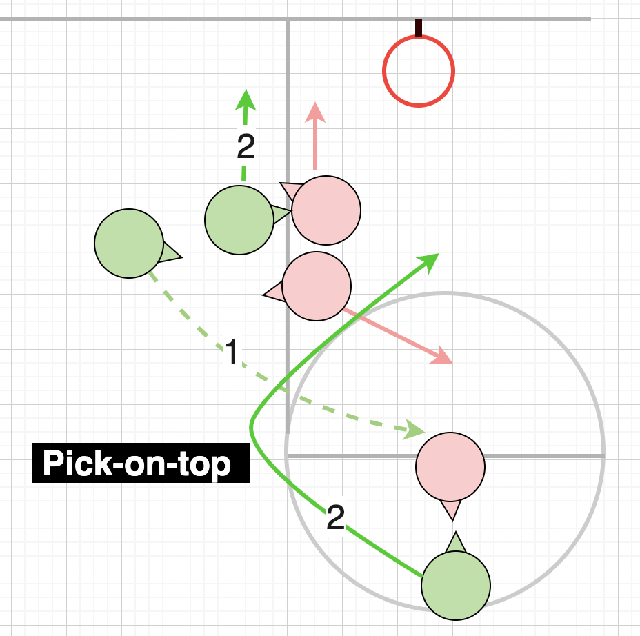

Pick on Top aka 3 on 2
Pick on top can be a 2-on-1 move, however more effective if executed as 3-on-2 as it creates more space and options. Move starts with screen roll or a Pick-N-roll setup.
Setting it up
Player on top, keeps defender engaged.
Ideally Defender on top should have back to the action. (Direction pick going to come from)
Enough gap for pick to move in
Player on top having ball will help to keep Defender's attention
Trigger
Pick or Shooter moves up to pick for player on top
Second player move towards baseline taking Defender with them to create space.
Player on top, moves in the direction of Pick without leaving space for Defender to come through
Pass ball to who ever is in best position to take shot